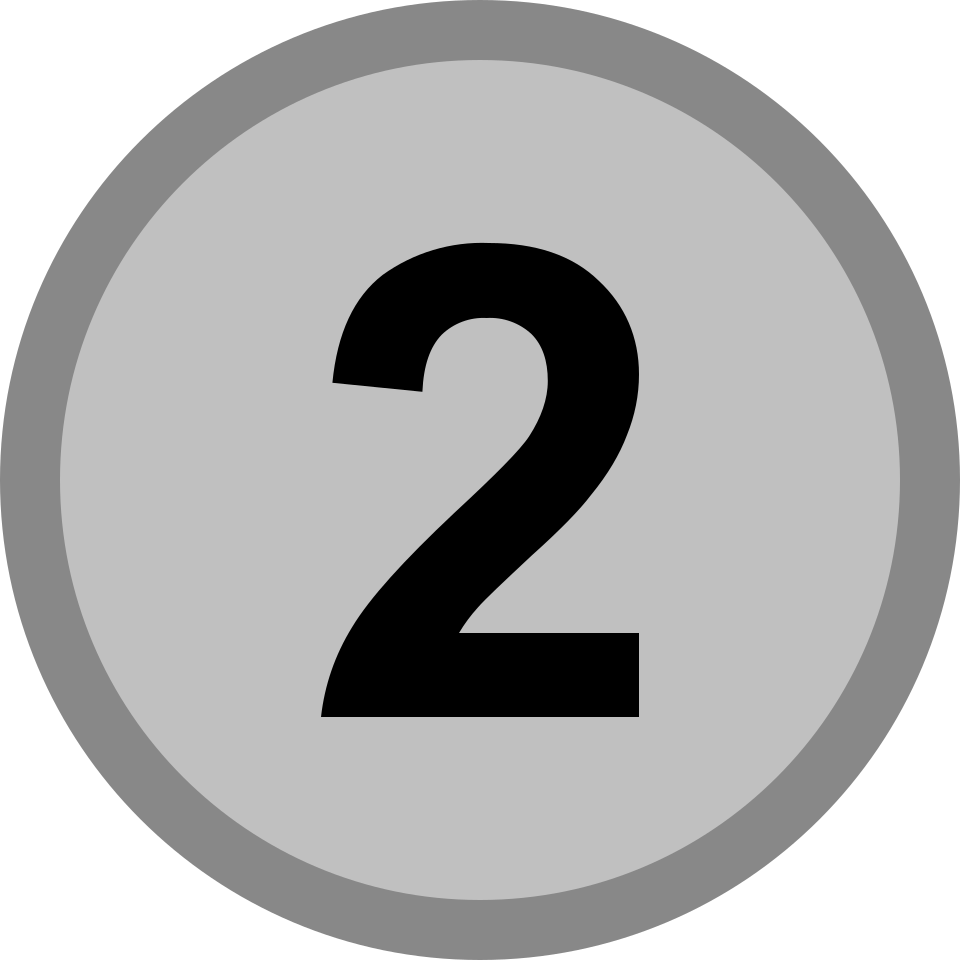

Undergraduate researcher
Zhenhao
Liu
Exploring language-centered AI systems for evidence, scientific reasoning, and research workflows.
01 // PROFILE
A research profile built around clear evidence.
IDENTITY / CONTEXT / INTENT
I am an undergraduate student in Artificial Intelligence at Westlake University, working with the Westlake NLP Lab under the guidance of Prof. Yue Zhang.
My interests lie at the intersection of natural language processing, research agents, and AI for science. I care about systems that preserve provenance, uncertainty, and the path from evidence to conclusion.
- Academic program
- Artificial Intelligence 01
- Entry cohort
- Class of 2024 02
- Research context
- Westlake NLP Lab 03
02 // RESEARCH
Three questions on the research horizon.
AGENTS / DISCOVERY / EVIDENCE
-
R.01
AGENT SYSTEMS
Research agents
How can language-model agents search, synthesize, and act on evidence while keeping the process open to inspection?
-
R.02
SCIENTIFIC DISCOVERY
AI for science
How can AI help researchers move from literature and observations toward useful hypotheses and experiments?
-
R.03
LANGUAGE + EVIDENCE
Evidence-grounded NLP
How should language systems represent provenance, uncertainty, and feedback throughout a research workflow?
03 // HONORS
Competitive programming record.
ICPC / CCPC / 2025-2026
Competitive programming shaped how I approach difficult problems: identify structure, test assumptions, and build precise solutions under constraints.

04 // CONTACT CHANNEL
Channel open
Let us exchange
research ideas.
For conversations around NLP, research agents, AI for science, and evidence-grounded workflows.
liuzhenhao@westlake.edu.cn